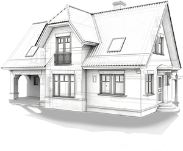
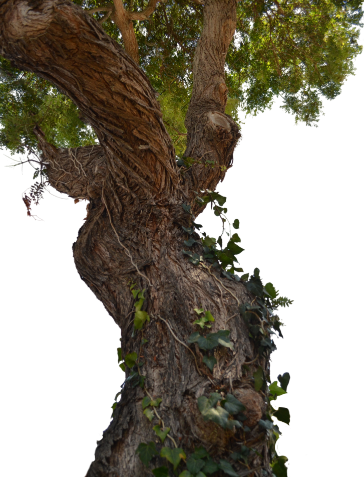
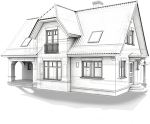
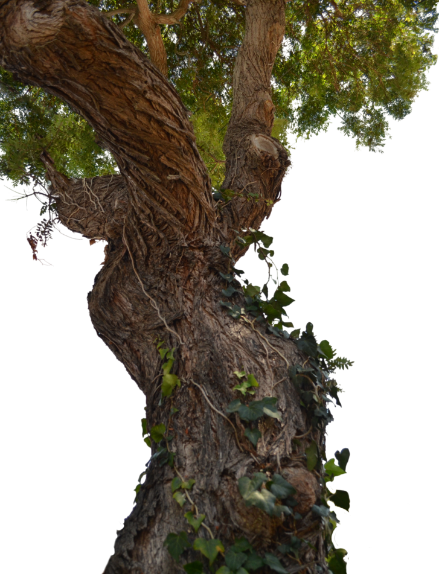

Uresničujemo vaše nepremičninske sanje od leta 1999.
 



Storitve
Splošno gradbeništvo
Stavbno pohištvo
Okna, vrata, notranja vrata, okenske police in ostali izdelki so izdelani po Vaših željah, merah in oblikah. S pravilno izbiro stavbnega pohištva bo vaš dom pridobil na esteskem izgledu. Dom bo postal udobnejši, varnejši in varčnejši. Za lažjo izbiro ste vabljeni, da nas obiščete v našem razstavne salonu ali nas pokličete. Z veseljem se vam bomo posvetili in vam pomagali do pravilne odločitve pri vašem pomembnem nakupu.
Fasaderstvo
Splošno gradbeništvo
Stavbno pohištvo
Fasaderstvo
Section 4